贴路箭头、引导光毯、目标关联标记
设计指南 / 功能与模式 · 2026-11-23
HUD 功能与模式
何时显示什么
从路口导航到辅助驾驶，逐车看清 AR、SR、地图与 TBT 的分工、共存和触发条件。
26车型样本
22款附原图
44来源条目

先把四个概念拆开。AR 说明信息与真实道路的关系；SR 说明环境如何重建；地图说明道路关系；TBT 说明下一步动作。它们可以共存，也可能分布在不同屏幕。
自车、周边车辆、车道的重建画面
路网、小地图、分叉和局部放大
转向箭头、距离、道路名
证据与样本口径
26 款目的性样本：中国品牌 14 款、海外品牌 12 款，按品牌来源分组，包含海外配置与历史代际。覆盖普通 HUD、SR、道路 AR 和全景信息带；不是按销量选出的“全市场前 26 名”，也不是全部 2026 最新年款。选样以代表性功能和可追溯证据为主。
已确认指官方手册或一手技术资料明确说明；图中可见只确认这张画面的内容；未核实表示没有取得足够证据，不能解读为不支持。官方发布演示不自动等于量产当前版本，图片均注明类型与年代。
复用并重新核读了项目已有原始手册与图像归档，新增起亚、现代、马自达、蔚来、魏牌等原图。图片保持原内容，未加绘 HUD，不凭照片测亮度、FOV 或安全收益。4 款未附可用 HUD 内容原图，已明确列为图像缺口。BYD 宋 L、SEAL 也用于说明国内普通 HUD 与不同市场差异。
功能含义与作用
按显示架构、信息内容、驾驶任务和可读性设置理解，不把不同维度当作一组互斥模式。
22 项功能逐项配图。优先采用实车照片；官方手册、设置界面与光学技术图分别标注。原图不叠绘 HUD，画面只用于理解功能形式，不能代替触发条件或实车测试。
HUD
Head-Up Display／抬头显示
含义与作用
让车速、导航或告警进入前方视野，减少向下寻找仪表的次数。它描述显示出口，不代表任何特定导航模式。
理解边界
车速、限速、状态通常使用稳定位置。

看哪里：中央是车速 70；右下是 387 m 转向提示；上部是独立小地图。
同屏可见的信息不等于道路贴合 AR，也不能代表新款或最新 OTA。
[SU7-I] · 点击图片查看原尺寸
W-HUD / C-HUD
风挡反射／独立组合玻璃 HUD
含义与作用
W-HUD 用风挡作反射面；C-HUD 用独立透明片。它们是光学架构分类。
理解边界
W-HUD 可以是普通 HUD，也可承载 AR 内容；不能与 AR 二选一。
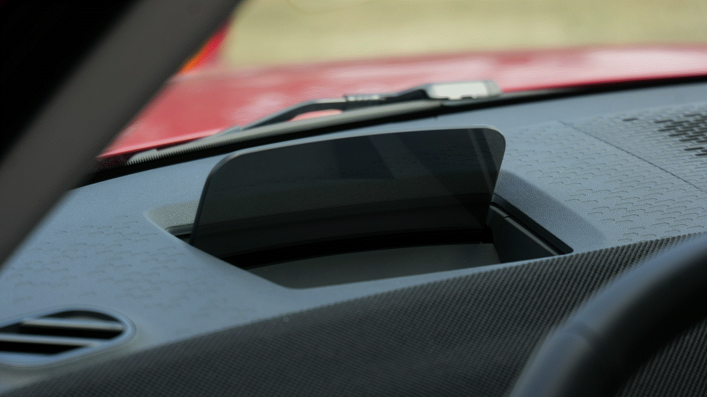
看哪里：观察仪表台中伸出的独立透明组合片，与直接借风挡反射的 SU7 对照。
静帧只说明可见硬件形态，不用于比较亮度、视距或功能多少。
[MINI-I] · 点击图片查看原尺寸
看哪里：中央是车速 70；右下是 387 m 转向提示；上部是独立小地图。
同屏可见的信息不等于道路贴合 AR，也不能代表新款或最新 OTA。
[SU7-I] · 点击图片查看原尺寸
AR / AR-HUD
Augmented Reality／增强现实
含义与作用
将路线、车道或目标提示关联到真实道路位置；帮助回答“就在前面哪个路口、哪条车道”。
理解边界
先有 HUD 硬件与数据链路，再由地图、定位、感知及车辆姿态配合；“3D”外观本身不证明已贴路。
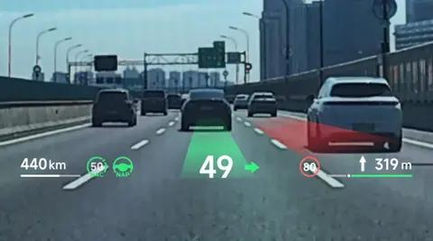
看哪里：绿色道路光毯位于前车所在车道；底部保留车速、状态和导航提示。
只观察空间图形与固定信息的区别；不能由画面反推所有触发条件。
[C11-I] · 点击图片查看原尺寸
SR
本研究用作环境／场景重建的统称
含义与作用
把自车、前车、车道等重新绘制成一个可理解的环境模型，帮助理解车辆识别到什么、准备做什么。
理解边界
不强行统一英文全称：不同品牌可称 Scene Reconstruction、Surrounding Reality、模拟现实、ESD／环境感知。须看画面及手册。

看哪里：左侧导航、中间环境和辅助驾驶、右侧车速：重建内容位于固定信息区。
是厂商手册示意，不是实车道路照片；车道透视图本身不证明贴路注册。
[LI] · 点击图片查看原尺寸
SR-HUD
品牌命名的模拟现实 HUD
含义与作用
例如魏牌蓝山，用 HUD 呈现重建式道路与导航。
理解边界
它不是自动高于或低于 AR-HUD 的通用技术等级；能重建不等于能对齐真实道路。
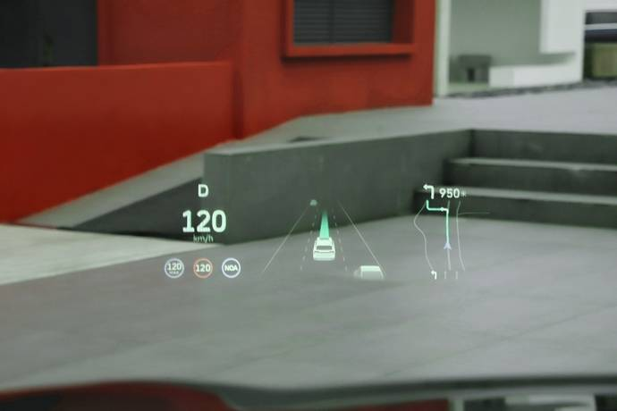
看哪里：中央是前车和车道重建，右边是路线小地图；这就是 SR 与地图可以并列的例子。
画面含 P 挡及演示车速，不当成真实行驶状态；不外推当前版本功能。
地图 / 小地图
二维或透视路线图
含义与作用
显示连续的道路关系、路线、后续转向和上下匝道关系，便于提前理解路径。
理解边界
地图可以在固定 HUD 区内显示；透视地图也可能仍是地图，不能凭倾斜角度归 AR。
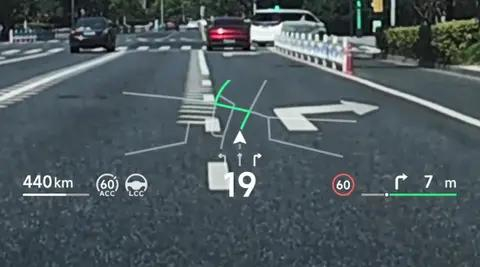
看哪里：小地图描画自车周围的路网与路线；右下 7 m 右转提示表达下一动作。
小地图的透视感不等于与真实道路注册；图中不能确认模式切换条件。
[C11-I] · 点击图片查看原尺寸
TBT
Turn-by-Turn／逐向导航
含义与作用
用转向箭头、距离、道路名表达下一动作，阅读量较小。
理解边界
TBT 是导航信息粒度；既可固定显示，也可用 AR 形式表现。EV6 同时列普通 TBT 与 AR TBT。
看哪里：中央是车速 70；右下是 387 m 转向提示；上部是独立小地图。
同屏可见的信息不等于道路贴合 AR，也不能代表新款或最新 OTA。
[SU7-I] · 点击图片查看原尺寸
车道级导航
告诉驾驶员应选哪条车道
含义与作用
可用车道条、地图、路口放大或道路光毯实现，减少临近路口才并线。
理解边界
车道级是导航精度／引导颗粒度，不自动等于 AR。
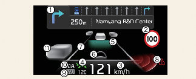
看哪里：顶部有推荐车道和普通 TBT；中央是周围车辆、跟车和车道信息。
图例展示可用信息种类，不能理解为所有图标始终同时出现。
[EV6] · 点击图片查看原尺寸
路口放大图
Junction View／复杂节点局部图
含义与作用
导航接近目标路口时，把分叉、车道和方向放大，补足小地图细节。
理解边界
图形路口放大仍可能在固定窗口里；它与摄像头 AR 视频不是同一种功能。
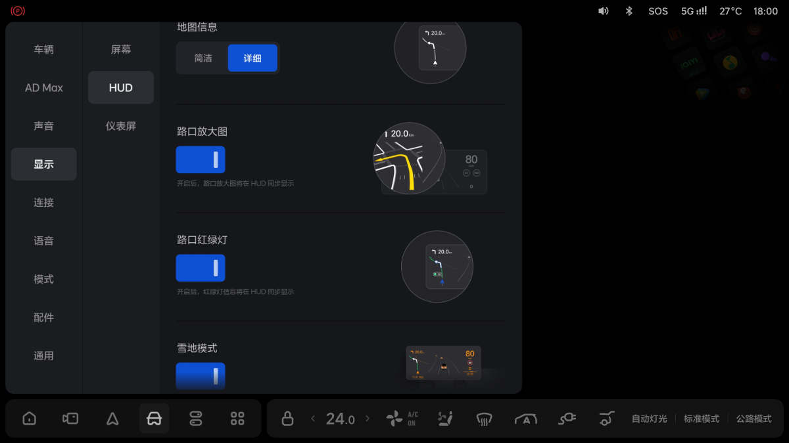
看哪里：“路口放大图”一行带有分叉路口缩略预览，下方另列红绿灯与雪地设置。
这是路口功能的设置与预览参考；不是接近路口时自动切换的实车连续画面。
[LI] · 点击图片查看原尺寸
导航光毯 / AR 箭头
把行驶方向关联到道路
含义与作用
用于路口、转弯或路径选择；光毯强调应走通道，箭头强调动作和方向。
理解边界
导航路线表达“应往哪走”；辅助驾驶轨迹表达“系统准备怎么走”，两种来源应区分。

看哪里：上方大箭头与道路光毯用于说明应走方向；下方车道条、车速和路线卡片仍是固定信息。
发布会演示不等于本项目实车测试；具体交付版本需另核。
[G7] · 点击图片查看原尺寸
辅助驾驶意图 / 轨迹
显示将要变道、超车、启停等意图
含义与作用
帮助驾驶员理解系统接下来的行为，并发现与预期不符之处。
理解边界
必须区分可用、激活、执行中、失败／请求接管；显示路径不等于车辆已经执行。

看哪里：图例 13 为前车标记，14 为前车起步，15 为高速换道辅助提示，表现不同的辅助任务。
提示显示、系统激活与车辆实际执行是不同状态；各项仍受配置和工作条件限制。
[EV6] · 点击图片查看原尺寸
ACC / SCC
自适应巡航／Smart Cruise Control
含义与作用
主要辅助纵向跟车和速度控制；HUD 可显示设定车速、跟车距离与目标车。
理解边界
巡航设定车速与真实车速是两项，不应用同一语义位置。
看哪里：顶部有推荐车道和普通 TBT；中央是周围车辆、跟车和车道信息。
图例展示可用信息种类，不能理解为所有图标始终同时出现。
[EV6] · 点击图片查看原尺寸
LCC / LFA / IACC / HDA
车道居中／车道跟随／集成巡航／高速辅助等厂商系统名
含义与作用
HUD 用车道、方向盘状态、目标和接管提醒表达相应辅助状态。
理解边界
功能范围依品牌和版本，不能按缩写相似就认定完全同能。

看哪里：按原图编号观察车速、前车与行人标记、车道重建、盲区提示和文字告警。
手册对前车／行人标记给出 ACC/IACC 激活及检测到对象的条件；不外推全部驾驶状态。
[S07] · 点击图片查看原尺寸
NOA / NCA / NGP / NAD
领航辅助及品牌辅助驾驶名称
含义与作用
可能结合导航完成跟车、变道和匝道等任务；HUD 可显示其意图和状态。
理解边界
这里不统一为同等级自动驾驶；AR 导航本身也不要求这些系统已激活。
看哪里：绿色道路光毯位于前车所在车道；底部保留车速、状态和导航提示。
只观察空间图形与固定信息的区别；不能由画面反推所有触发条件。
[C11-I] · 点击图片查看原尺寸
FCW / LDW / BSD / BSM / FCTA
碰撞／偏离／盲区／横向来车等提醒
含义与作用
在检测到对应风险时及时提醒；可用文字、图标、声音或目标关联高亮。
理解边界
BSM 图标是风险提示；盲区摄像头影像是视频信息，两者不能混记。

看哪里：图中 1 为 FCTA 区、2 为警告引导、3 为 BSM，4 为 i-ACTIVSENSE 信息。
告警预留区域与真实触发画面不同；不能把不同告警缩写当成同一系统。
[MAZDA] · 点击图片查看原尺寸
TSR / 限速 / 红绿灯倒计时
交通标志识别与道路数据
盲区 / 后视 / 泊车影像
摄像头原始视频
含义与作用
补充侧后方或低速环境视野；部分国内样本允许进入 HUD。
理解边界
真实摄像头视频不是 SR；叠有导航的实景视频也不自动是透明风挡 AR-HUD。
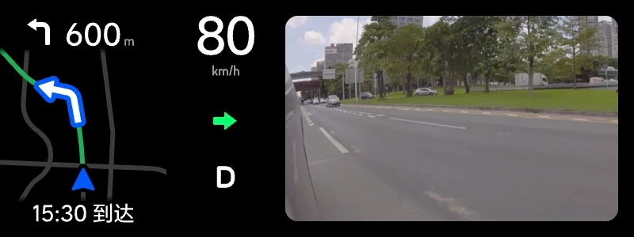
看哪里：右侧是一块摄像头画面，左侧仍保留导航和车速，说明视频与重建图形是不同的信息形式。
该段说明开关开启后打转向灯显示侧后方影像；这张图不证明 HUD 还有倒车视频。
[LI] · 点击图片查看原尺寸
经典 / 极简 / 全部 / 沉浸
信息量和布局的用户偏好
含义与作用
在基础读数、地图、环境和舒适内容之间调配空间。
理解边界
模式名不通用；需记录它在导航、辅助驾驶、倒车等状态下是否会被覆盖。
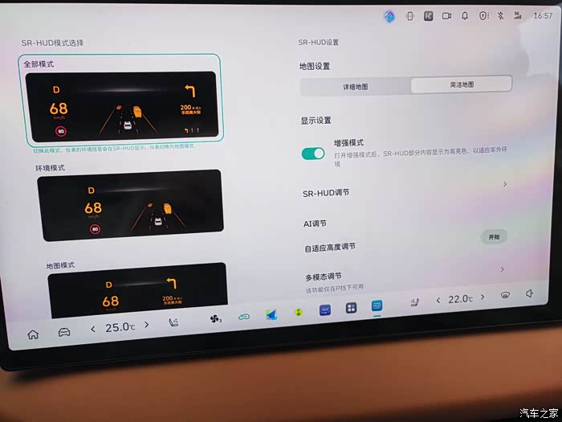
看哪里：左侧可见全部、环境、地图模式预览，右侧为地图与增强显示设置。
只确认照片中的菜单；不把车主所述限制外推为所有蓝山版本的规则。
[WEY-U] · 点击图片查看原尺寸
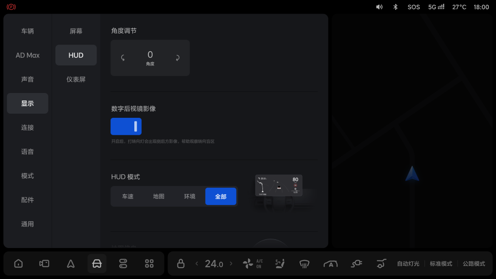
看哪里：可见车速、地图、环境、全部四个选项，与蓝山菜单对照可理解品牌命名差异。
用户选择的模式并不覆盖全部场景优先级：辅助驾驶开启时仍可能加入地图或环境。
[LI] · 点击图片查看原尺寸
雪地 / 增强 / 日夜
配色或可读性设置
含义与作用
在积雪、明暗等背景中改善区分；例如理想橙色、乐道黄色。
理解边界
改色不是新的导航能力；不是所有车型会根据下雪自动启用。
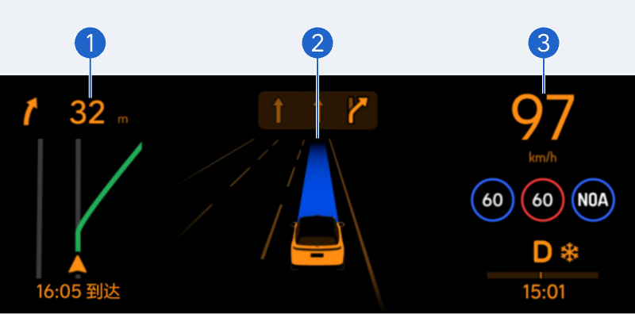
看哪里：文字、车道线和部分图标改为橙色；仍沿用原先的导航、环境和车速分区。
配色增强不是新的 AR 导航能力；这不是现场雪天亮度实测。
[LI] · 点击图片查看原尺寸
PHUD / Panoramic Vision
风挡下缘全景信息带
含义与作用
在风挡黑区形成宽幅信息带，可承载卡片、导航或座舱信息。
理解边界
小米 YU7 与宝马信息带为架构对照；宝马另有独立 3D HUD，不能把两者合并。
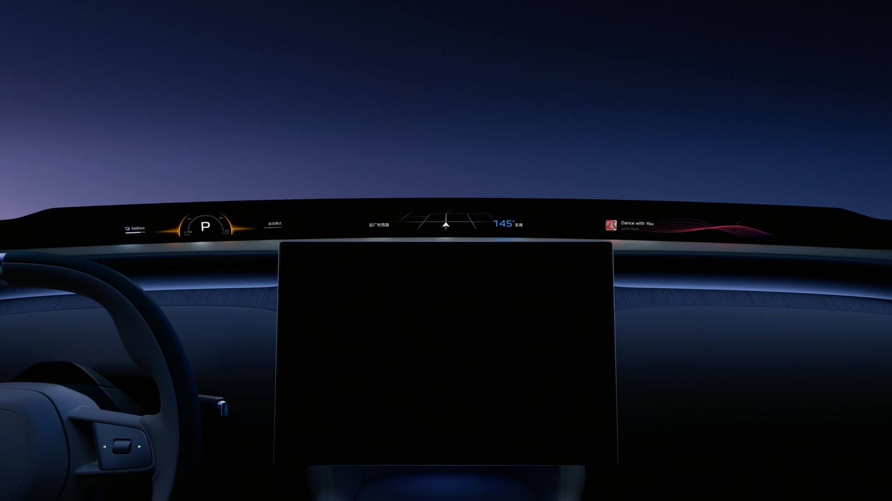
看哪里：内容沿风挡下缘黑区横向铺开；观察信息带与透明道路视野的分界。
PHUD 信息带不能直接等同于道路注册 AR-HUD。
[YU7] · 点击图片查看原尺寸

看哪里：原图标明 BMW Panoramic Vision 与独立 BMW 3D Head-Up Display，是两个显示出口。
该图不是实车拍摄，也不是旧款 iX3 的配置图。
[BMW-I] · 点击图片查看原尺寸
FOV / VID / Eyebox
视场角／虚像距离／眼盒
含义与作用
决定看得到多宽、视觉成像在多远、头部可移动多大范围；影响显示内容能否稳定读到。
理解边界
“等效英寸”依赖虚像距离，不能用 87 英寸比 56 英寸就判功能或体验胜负。
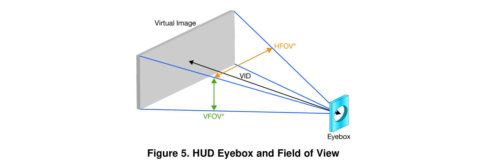
看哪里：HFOV／VFOV 表示视场角，VID 表示虚像距离，Eyebox 表示可观看区域。
用示意图理解术语；不把图中的几何比例当作某款量产车的实测规格。
[TI-FOV] · 点击图片查看原尺寸
媒体 / 歌词 / 观影
座舱舒适或驻车内容
含义与作用
音乐、来电、语音反馈可减轻寻找其他屏幕的动作；驻车观影属于另一任务。
理解边界
各功能按具体车速和挡位限制核验；问界 M8 观影明确只在 P 挡。
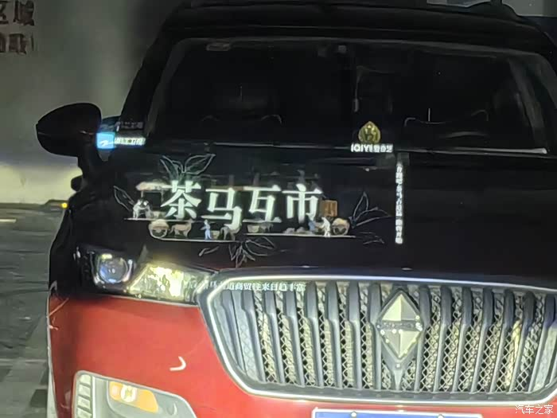
看哪里：前方真实车辆仍可见，HUD 区出现影视画面，可直观区分驻车娱乐与行车导航。
该图只作驻车显示参考；歌词、音乐与观影的可用条件须分开核验，不表示行车中可播放。
[WEY-U] · 点击图片查看原尺寸
术语归纳为本研究的分析框架；SR 不强行统一英文全称。模式实例依据 [LI] [WEY] [EV6] [HY] [M9] [BMW-I]
同一场景，两车对照
选择车型和任务，查看原图及手册规则。切换任务只切换解释，原图仍是注明版本的静态样例；这里不是实时 HUD 模拟器，也不伪装成同一路况对拍。
看清模式变化：同车官方图例
固定 TBT、周围车辆信息、车道和车距并列；不是没有环境显示。 [EV6]
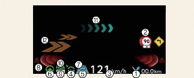
普通 TBT 编号 1 与 AR TBT 编号 11 同时列在手册中。 [EV6]
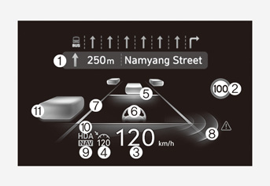
图例 11 是周围车辆信息；该版 Standard 与 AR 重新分配内容。 [HY]
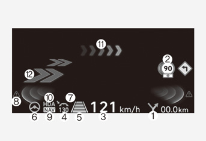
AR 模式额外呈现道路关联箭头与标记，仍保留固定信息。 [HY]
媒体转载图可见道路光毯与侧向着色；只作读图，不推导此场景的全部触发条件。 [C11-I]
同篇转载图可见小地图与固定转向距离。原始拍摄者／软件版本未知。 [C11-I]
简洁／详细地图、路口放大、倒计时和雪地模式为各自设置。 [LI]
EV6 与 IONIQ 5 的手册图分辨率较低，保留原尺寸信息；仅用于模式读图，不用于视觉参数测量。图例中的所有项目不代表总会同时出现。
什么时候 AR，什么时候 SR、地图或 TBT
没有全行业统一的自动切换规则。实际呈现取决于用户偏好、导航源、驾驶系统状态、检测对象、挡位与地区功能。
| 驾驶任务 | 前置条件 | 显示分工 | 车型证据 |
|---|---|---|---|
| 手动通勤 | 没有激活辅助驾驶，可能也没有设置导航目的地。 | 基线车速／状态；可由用户选择信息量。 | 理想 i8 的环境模式、乐道 L60 的环境常驻，说明 SR 不一定要辅助驾驶激活。 |
| 导航中的路口 / 匝道 | 存在有效路线，接近需要决策的节点。 | TBT 提供下一动作；小地图提供拓扑；AR 提供道路落点。三者可叠加。 | 问界 M9/M8 的实验室 AR 车道指引明确用于手动驾驶；EV6/IONIQ 5 在 AR 模式仍显示普通 TBT。 |
| ACC / 领航辅助 | 系统已激活，相应对象或任务满足显示条件。 | 用状态、目标车、车距、意图或轨迹表达当前辅助行为。 | 深蓝 S07 的目标标记要求 ACC/IACC＋检测到对象；理想 i8 会自动增加地图／环境；大众 ACC/Travel Assist 各自有显示。 |
| 打转向灯 | 用户开启影像功能，并满足该车型显示条件。 | 侧后摄像头画面或盲区风险符号；不与 SR 混称。 | 理想 i8、问界 M9/M8 有明确转向触发；问界极简模式禁用转向灯影像。 |
| 倒车 / 低速泊车 | 进入对应挡位、泊车任务或影像条件。 | 只有厂商明确支持时才计入 HUD 后视／泊车影像。 | 问界 M9/M8、全新 C11 明确有 HUD 后视影像；VISTIQ 手册明确 HUD 图像不能当作泊车辅助。 |
| 雪地 / 低能见度 | 使用者开启增强配色，或触发已说明的环境功能。 | 提高文字与背景的区分；AR 可用性仍需看感知和注册质量。 | 深蓝 Standard/Snow 是配色；乐道雪地变黄；小鹏发布演示有雨雾目标提示；不能写成全行业雨天自动切 SR。 |
| P 挡驻车 | 车辆处于 P 挡，执行设置或驻车娱乐。 | 允许相应视线／高度校准或明确获准的娱乐显示。 | 问界 M8 观影只在 P 挡；蓝山高度自适应／多模态调节要求 P 挡；歌词不自动等于视频观影。 |
按各车型已知条件归纳 [M9] [M8] [LI] [L60] [S07] [EV6] [VW-V] [GM] [WEY]
读切换逻辑时，至少记录这六项
① 是否有导航路线及导航来源；② 用户选择的显示模式与独立开关；③ 手动／ACC／领航辅助状态；④ 是否检测到目标／接近路口；⑤ 转向灯和挡位；⑥ 市场、车型配置与软件版本。
研究建议：当定位或注册不可靠时，可考虑退回稳定的 TBT 或地图；这是待验证的设计建议，不能反写成某款车已经实现的降级逻辑。
逐车型功能矩阵
正文保留“确认”与“待核”的区别。每一行点车型名可跳到原图及完整八项说明；CSV 另含影像、驻车及限制。
| 车型／版本 | 架构／模式 | AR 导航 | SR／环境 | 地图 / TBT | 依据 |
|---|---|---|---|---|---|
| 问界 M92026 增程版／中国手册 | AR-HUD经典／极简；AR 增强、小地图等独立开关 | 确认：开启实验室 AR 车道指引，手动驾驶＋导航路线＋对应路况时显示光毯或箭头。不能把这条规则改写为必须开启 NCA。 | 手册确认辅助驾驶时可显示意图文字；未将独立 SR 全景重建列为本次确认项。 | 确认：小地图独立开关，默认开启。与 AR 车道指引不是同一设置。 原图有方向和距离；不代表必须关闭小地图才出现。 | [M9] |
| 问界 M8增程版／2026-09 中国手册 | AR-HUD经典／极简；AR 增强、车道指引等独立设置 | 确认：实验室 AR 车道指引开启后，手动驾驶时按导航路线及对应路况呈现光毯或箭头。 | 确认辅助驾驶意图文字；独立 SR 场景全景的开关及触发条件未在 HUD 章核实。 | 确认小地图开关；方向、地图与 AR 功能分开配置。 原图确认转向箭头及距离；简化模式的逐元素保留表待核。 | [M8] |
| 小鹏 G72025-06 追光全景发布演示／中国 | AR-HUD三类场景：导航、辅助驾驶、安全；不是三个互斥设置档位 | 官方演示：变道、转弯、复杂路口采用 AR 光毯；不可行岔路可显示 X。具体量产版本及开关待对应车主手册核验。 | 以贴合道路的路径和对象提示表达意图；不能据此确认还有独立 SR 小窗模式。 | 发布演示有右侧路线信息；独立全地图模式及自动切换规则未公开。 演示底部方向和车道符号可与道路 AR 共存；完整 TBT 设置待核。 | [G7] |
| 零跑 全新 C112026 款／2025 联合技术发布 | AR-HUD车速／AR／地图三模式，可切换 | 确认 AR 模式及路线显示能力；何种路口、距离、车速自动触发未在一手资料说明。 | 联合发布未给独立 SR 模式；ADAS 数据融合不等于已经确认 SR 画面。 | 确认地图模式；不能凭名称宣称“只在高速”或“城市自动切地图”。 转载图中可见固定转向距离与小地图共存；独立开关与自动切换规则仍待手册。 | [C11] [C11-F] [C11-I] |
| 魏牌 全新蓝山2025-10 手册／2024 发布前静态画面 | SR-HUDSR-HUD 显示模式＋地图设置＋增强模式 | 未确认道路注册 AR 导航；不能把 SR-HUD 的商品名直接改成 AR-HUD。 | 品牌将 SR-HUD 称为模拟现实抬头显示。实拍有车辆、车道重建；手册允许切模式，但未列出各模式名与 NOA 自动切换条件。 | 确认地图设置；开启路口放大图后，导航到路口时自动显示路口放大图。 静态图有方向与距离；手册未明确 TBT／地图的独立模式名称。 | [WEY] [WEY-C] [WEY-I] |
| 理想 i82026 Max／2026-08 官方手册 | 固定信息区 HUD车速／地图／环境／全部；地图再分简洁／详细 | 本次未确认贴合真实道路的 AR 导航；HUD 内环境车辆图不能当作 AR 注册证据。 | 确认“环境”模式。辅助驾驶开启后，“车速”模式仍加入地图和环境，“地图”模式加入环境，“环境”模式加入地图。 | 确认地图模式及详细小地图；开启路口放大后，导航至要汇入路口自动放大。 “地图信息→简洁”显示精简导航；这是信息简化方式，不必称为地图关掉。 | [LI] |
| 乐道 L602025-10-28 中国用户手册 | 固定信息区 HUD环境感知常驻开关；雪地模式；亮度／高度／倾角 | 本次手册未确认道路贴合式 AR 导航；不因显示区较大就归类 AR。 | 确认：开启“环境感知常驻显示”后，HUD 始终展示周围环境感知。无需把 SR 描述成只在 NOA 时才出现。 | 本手册 HUD 设置段未给出小地图独立模式，保留未核验。 导航在 HUD 的逐指令形式和显示条件，需结合相应版本补图；本版不由整车导航反推。 | [L60] |
| 小米 SU72024 初代 HUD 实拍；2026 配置及 OTA 线索分开 | 固定信息区 HUD当前确认图示有小地图、转向距离、车速；新 OTA 模式待官方版本补证 | 本次未取得该样本贴合道路的 AR 导航一手证据。画面中悬浮路线图属于小地图。 | 整车官方配置列 SR，不足以确认当前 HUD 内的 SR 触发规则。2026 OTA 的媒体线索另列，未计入确认。 | 2024 图中可见小地图；自动放大及可编辑卡片条件不由旧图推断。 实拍可见 387 m 转向提示，与小地图共存。 | [SU7-P] [SU7-I] [SU7-LEAD] |
| 极氪 007全球产品页首发代展示配置 | AR-HUD（厂商命名）独立模式菜单及自动切换规则未在产品页公开 | 官方称 AR-HUD；所选图主要展示地图、车速及重建，未据此确认道路贴合精度与 AR 触发条件。 | 图中可见车辆／车道重建；是否随辅助驾驶自动开启、是否可常驻待手册核验。 | 官方图显示地图／路线；确认图示存在，不认定独立全地图模式。 图中有转向与 57 m 距离。 | [ZEEKR] |
| 蔚来 ET716.3 英寸产品页＋欧版在线 HUD 说明 | 固定信息区增强 HUD可调亮度／高度等；产品页确认路口放大图 | “增强 HUD”并不自动等于道路注册 AR；本次一手资料未确认贴路 AR 导航。 | 产品图可见自车／车道与目标图标；完整 ESD 在手册另章，不能默认整个 ESD 都搬入 HUD。 | 官方产品说明确认导航与路口放大图；何时从小地图切放大、是否可手动选择，资料未展开。 产品图有下一转向、184 m、道路名与路线图，同屏呈现。 | [NIO] [NIO-P] |
| 深蓝 S07澳大利亚 2025-11 手册／PDF 134–135 | AR-HUDStandard／Snow 是普通／雪地显示；非 AR／非 AR 切换 | 确认路口引导；导航激活且接近路口时，下方出现可行车道信息。手册未给光毯连续贴路与独立 AR 开关条件。 | 图例明确 Scene reconstruction＝车道线绘制与车辆渲染；该项单独的启停逻辑未说明。 | 所引 HUD 章未列二维小地图模式。 路口引导信息与可行车道获确认；未在此章命名 TBT 模式。 | [S07] |
| 小米 YU72025 天际屏产品图／架构边界样本 | PHUD 风挡下缘信息带卡片式全景显示；位于风挡下缘黑区 | 所选天际屏本身不是在透明道路视野中注册箭头的 AR-HUD；不纳入道路 AR 已确认样本。 | 可容纳环境类卡片；不能把黑区里的车辆重建叫作贴路 AR。具体常驻规则待手册。 | 官方图含导航卡片；大地图与其他信息的分工需按天际屏而非传统 HUD 画板研究。 方向与路线可作为信息卡内容；本版不确认其独立模式菜单。 | [YU7] |
| 奔驰 S 级 W2232020 W223 可选 AR-HUD／2026 改款补充 | AR-HUD基本驾驶信息＋道路关联导航／驾驶辅助内容 | 官方确认导航箭头和车道建议可投到前方道路；导航启用、对应导航任务可用时呈现；精确触发距离未公开。 | 2026 MBUX Surround Navigation 的 3D 环境在驾驶员显示屏；官方另述 AR-HUD，不能把两块显示器合并。 | 未确认 HUD 完整地图模式；详细地图和 Surround Navigation 应按仪表／中控分工阅读。 固定导航提示与 AR 提示可服务不同层级；没有取得与全部外部地图应用兼容的证明。 | [MB] [MB-26] |
| 奥迪 Q6 e-tron2024 第二代 AR-HUD／德国技术资料 | AR-HUD固定状态区＋斜像面道路关联内容 | 确认导航符号与环境关联；厂商描述可产生远至 200 m 的视觉印象，不是每条箭头的固定触发距离。 | 未确认独立 SR 环境模式；辅助提示不等于完整周围车辆重建。 | 未在所引资料确认 HUD 二维地图模式。 有导航符号；固定 TBT 菜单、路口前触发距离及第三方应用条件待本车手册。 | [AUDI] [AUDI-I] |
| 大众 ID.7 / Tourer欧洲；2024 Tourer 更新＋2025 官方操作视频 | AR-HUD近区扩展／精简；可控制 AR 内容 | 确认与道路走向匹配的路线引导；2024 Tourer 更新将 CarPlay／Android Auto 活动导航接入 AR 路线显示。 | ACC 激活显示前车距离、Travel Assist 在车道内显示；未确认独立完整 SR 环境模式。 | 近区有导航信息；未确认普通二维小地图的全屏模式。 固定近区导航与道路 AR 分层；View 可切近区信息量；不能外推任意手机地图应用均支持。 | [VW] [VW-V] |
| 宝马 新世代 iX32025 发布／新世代；选装 3D HUD | PHUD＋独立 3D HUDPanoramic Vision 基础信息带＋选装 3D HUD 的导航／辅助 | 官方确认 3D HUD 的导航和驾驶辅助空间深度显示；本版按厂商“3D”命名记录，未据图宣称与全部道路目标精确贴合。 | 确认辅助驾驶图形会进入 3D HUD；未取得独立全场景 SR 模式菜单。 | 导航与详细路线按 OS X 多显示区分工；不能把 Panoramic Vision 信息带直接当作 3D HUD 小地图模式。 基本导航与 3D 导航分层；第三方手机导航的 3D 效果兼容性未核验。 | [BMW] [BMW-I] |
| 凯迪拉克 VISTIQ2026 欧版手册；北美 Platinum 实拍 | 双层 AR-HUDStandard／Augmented Reality／Assist 三视图；均保留近层信息 | AR 视图的远层显示道路关联图形：导航有活动路线时显示，碰撞、车道保持和辅助变道按对应条件显示。 | Assist 视图显示激活中的辅助系统状态图形；不据此宣称完整 SR 环境全景。 | 未确认 HUD 全屏二维地图；不能由车内 Google 地图推导。 Standard 远层在车载导航路线激活时显示 TBT；无路线时远层不显示。Assist 视图也可同时显示 TBT。 | [GM] [GM-I] |
| 现代 IONIQ 5英国 2022 手册／有 AR-HUD 配置 | AR-HUDAugmented reality／Standard／Off；AR 匹配校准 | 确认 AR 模式额外给出 AR 转向、车道安全、前车及起步提示；部分图项依赖 Highway Lane Change Assist 配置。 | Standard 模式图例有 Surrounding vehicle information，是本研究所称 SR 类显示；不是只有 AR 模式才有车道／前车。 | 所引 HUD 章没有完整小地图模式；不能由车机地图功能外推。 普通 TBT 在 AR 和 Standard 均有；AR 模式还加 AR TBT，二者可以共存。 | [HY] |
| 起亚 EV6印度官方英文在线手册／OCV 版面 | AR-HUDAR／Standard／Off；AR 校准和内容选择 | AR 模式在普通信息外加入 AR TBT、AR 车道安全、前车标记、前车起步、辅助变道；部分项依赖配置。 | Standard 图例明确有周围车辆信息；AR 模式主要用对象标记和动态引导，不等于完整 SR 模式。 | 所引 HUD 列表未列完整地图模式。 两种模式都保留普通 TBT；AR 模式还出现 AR TBT。同叫导航不代表同一个位置或表现。 | [EV6] [EV6-S] [EV6-L] |
| 起亚 EV92026 美国 MV1A 手册／HUD 配置 | 固定信息区 HUD内容与辅助信息显示；该章未列 AR／Standard 双模式 | 本版手册未确认道路 AR 导航；不能由 EV6 有 AR-HUD 推导 EV9 也相同。 | 明确列 Surrounding vehicle information，可归 SR 类信息；无独立 SR 模式名称。 | 未列二维完整地图模式。 确认 TBT（按配置／地区）；道路标志与 TBT 在部分地区提供。 | [EV9] |
| 丰田 Camry2024 北美 Quick Reference Guide／HUD 配置 | 固定信息区 HUDHUD 开关及亮度／位置等设置 | 所引手册未列道路 AR 导航。 | 驾驶辅助状态和车道符号不自动等于完整环境重建；本版不计 SR 全景。 | 本章未列 HUD 小地图模式。 确认 HUD 与导航系统联动（按配置）；这张概览图标出导航联动区，没有展开具体 TBT 图形。 | [TOYOTA] |
| 本田 Accord Hybrid2026 北美 HUD 配置 | 固定信息区 HUD方向盘选择 HUD 内容；显示项目依版本 | 所引手册未列道路注册 AR 导航。 | Honda Sensing 状态图为辅助显示；未确认完整 SR 世界重建。 | 未确认 HUD 完整小地图。 确认转向导航提示；导航来源与连接条件须按手册具体项目核对。 | [HONDA] |
| 马自达 CX-902025 美国 Active Driving Display／部分配置 | 固定信息区 HUD独立导航／辅助／警告区域；可调显示信息 | 该手册未列道路注册 AR 导航。 | i-ACTIVSENSE 区可见车道和前车图形；归局部重建式辅助显示，不宣称完整 SR。 | 未列 HUD 小地图模式。 导航区显示转向及距离；图中为 100 ft 指令。 | [MAZDA] |
| 沃尔沃 XC90美国当前产品页／2025 手册辅助核对 | 固定信息区 HUDHUD 基本驾驶信息；Calm／Navi 是仪表模式 | 所引官方资料未确认道路注册 AR 导航。 | 未取得 HUD 完整环境重建模式的证据。 | 详细地图的 Navi 视图在 12.3 英寸仪表；不能错误记为 HUD 地图模式。 HUD 确认导航指令、车速和限速；不用完整地图也能提供下一动作。 | [VOLVO] [VOLVO-M] |
| 比亚迪 海豹 SEAL欧版左舵／2024-10 手册；非中国新款 | 固定信息区 HUDClassic／Snow；可选安全驾驶辅助信息 | 手册 HUD 章未确认贴路 AR 导航。 | 车道偏离和 BSD 是状态／预警信息；没有取得完整 SR 重建证据。 | 该版 HUD 章未列小地图显示模式。 所引欧版 HUD 章列举项未明确导航形式，本版保留未核实；不等于其他市场或 OTA 均无导航。 | [SEAL] |
| 比亚迪 宋 L DM-i2026 中国用户手册／HUD 按配置 | 固定信息区 HUDHUD 开关；位置、亮度、旋转及模式设置按手册 | 所引章节未确认贴路 AR 导航。 | 未确认完整 SR 模式；车道偏离／盲区提示不等于全景环境重建。 | 确认 HUD 可显示导航，但该章未证明完整小地图模式。 确认导航信息进入 HUD；具体 TBT 图形及地图源支持需对应界面补图。 | [SONGL] |
车型原图与详细说明
照片、官方技术图与手册图分开标注。展开每张卡片的“功能、触发与版本说明”，可查看八项完整记录。
类别用于定位相关案例，不表示全部为同强度证据；AR／空间引导包含宝马按厂商命名的 3D HUD。未取得逐项条件的案例会在正文注明。
问界 M9
2026 增程版／中国手册
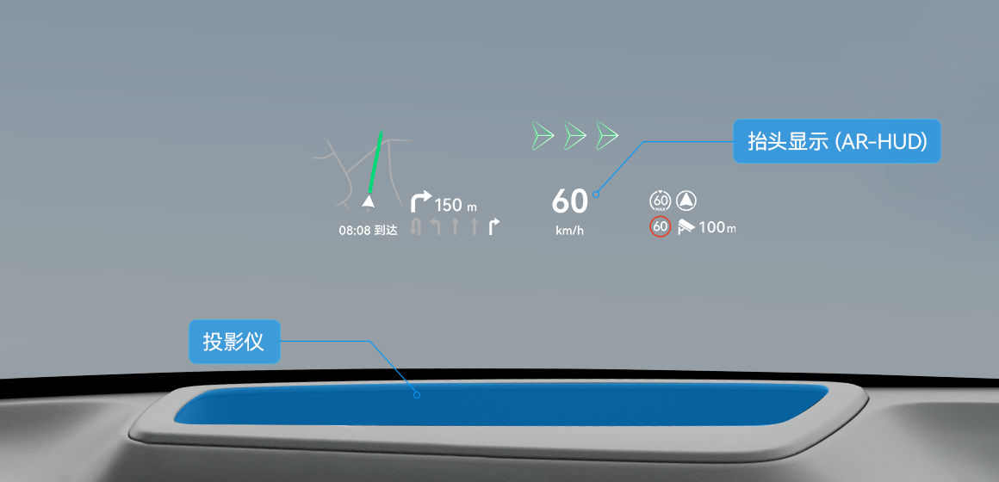
左侧小地图＋固定车速＋上方箭头；原图中的箭头只能说明图示内容。
原始出处 ↗ · 点击图片打开原尺寸
功能、触发与版本说明 8 项
- 模式与设置
- 经典／极简；AR 增强、小地图等独立开关
- AR 导航：什么时候
- 确认：开启实验室 AR 车道指引，手动驾驶＋导航路线＋对应路况时显示光毯或箭头。不能把这条规则改写为必须开启 NCA。
- SR／环境：什么时候
- 手册确认辅助驾驶时可显示意图文字；未将独立 SR 全景重建列为本次确认项。
- 地图：什么时候
- 确认：小地图独立开关，默认开启。与 AR 车道指引不是同一设置。
- TBT：什么时候
- 原图有方向和距离；不代表必须关闭小地图才出现。
- 辅助驾驶与告警
- 辅助驾驶模式＋意图文字开关：显示辅助驾驶意图；安全预警另由 HIMA 实验室开关控制。
- 影像、环境与驻车
- 经典模式可用转向灯盲区影像、倒车后视影像；极简模式禁用这两项。雪地增强、红绿灯倒计时独立设置。
- 版本边界与待核验
- 本手册只支持系统自带地图导航。AR 增强默认开启，不等于实验室 AR 车道指引默认开启。
问界 M8
增程版／2026-09 中国手册

小地图和 150 m 转向提示在车速左边，蓝色箭头在上方
原始出处 ↗ · 点击图片打开原尺寸
功能、触发与版本说明 8 项
- 模式与设置
- 经典／极简；AR 增强、车道指引等独立设置
- AR 导航：什么时候
- 确认：实验室 AR 车道指引开启后，手动驾驶时按导航路线及对应路况呈现光毯或箭头。
- SR／环境：什么时候
- 确认辅助驾驶意图文字；独立 SR 场景全景的开关及触发条件未在 HUD 章核实。
- 地图：什么时候
- 确认小地图开关；方向、地图与 AR 功能分开配置。
- TBT：什么时候
- 原图确认转向箭头及距离；简化模式的逐元素保留表待核。
- 辅助驾驶与告警
- 辅助驾驶意图文字在辅助驾驶模式触发；不将中控 ADS 3D 视图自动计入 HUD。
- 影像、环境与驻车
- 经典模式的转向盲区／倒车影像；雪地增强。AR-HUD 视频流转仅 P 挡可用。
- 版本边界与待核验
- 仅系统自带地图。极简模式不能使用转向影像与倒车影像；观影不能放入行车功能清单。
小鹏 G7
2025-06 追光全景发布演示／中国
发布会屏幕局部：上方道路箭头与光毯，下方固定车速、车道和路线卡片。
原始出处 ↗ · 点击图片打开原尺寸
功能、触发与版本说明 8 项
- 模式与设置
- 三类场景：导航、辅助驾驶、安全；不是三个互斥设置档位
- AR 导航：什么时候
- 官方演示：变道、转弯、复杂路口采用 AR 光毯；不可行岔路可显示 X。具体量产版本及开关待对应车主手册核验。
- SR／环境：什么时候
- 以贴合道路的路径和对象提示表达意图；不能据此确认还有独立 SR 小窗模式。
- 地图：什么时候
- 发布演示有右侧路线信息；独立全地图模式及自动切换规则未公开。
- TBT：什么时候
- 演示底部方向和车道符号可与道路 AR 共存；完整 TBT 设置待核。
- 辅助驾驶与告警
- 官方展示变道、红绿灯启停、超车和泊车路径意图；其可用性依赖对应辅助驾驶功能。
- 影像、环境与驻车
- 官方列出雨雾前车／车道、窄路会车、弯道及盲区等预警场景；不采纳“最全”等宣传排名。
- 版本边界与待核验
- 这些是发布演示范围，没有为每项取得交付版本／速度阈值；不能据演示证明已在所有车主车辆上线。
零跑 全新 C11
2026 款／2025 联合技术发布
固定读数 19、右转 7 m 与小地图同屏；只确认画面可见内容，不能反推激活或切换条件。
原始出处 ↗ · 点击图片打开原尺寸
功能、触发与版本说明 8 项
- 模式与设置
- 车速／AR／地图三模式，可切换
- AR 导航：什么时候
- 确认 AR 模式及路线显示能力；何种路口、距离、车速自动触发未在一手资料说明。
- SR／环境：什么时候
- 联合发布未给独立 SR 模式；ADAS 数据融合不等于已经确认 SR 画面。
- 地图：什么时候
- 确认地图模式；不能凭名称宣称“只在高速”或“城市自动切地图”。
- TBT：什么时候
- 转载图中可见固定转向距离与小地图共存；独立开关与自动切换规则仍待手册。
- 辅助驾驶与告警
- 企业披露确认 ADAS、座舱、HUD 数据融合；尚未给出逐辅助功能的显示条件。
- 影像、环境与驻车
- 联合发布明确 HUD 可显示盲区影像及倒车影像；具体触发开关、速度门槛待手册。
- 版本边界与待核验
- 图片由媒体转载，拍摄者和软版未知；功能模式依据联合发布。不采用供应商文章的通用配图；2023 中控 AR 视频不等于 AR-HUD。
魏牌 全新蓝山
2025-10 手册／2024 发布前静态画面
中央为车道／前车重建，右侧小地图和 250 m 指令。背景静止，HUD 显示 P 挡与演示车速。
原始出处 ↗ · 点击图片打开原尺寸
功能、触发与版本说明 8 项
- 模式与设置
- SR-HUD 显示模式＋地图设置＋增强模式
- AR 导航：什么时候
- 未确认道路注册 AR 导航；不能把 SR-HUD 的商品名直接改成 AR-HUD。
- SR／环境：什么时候
- 品牌将 SR-HUD 称为模拟现实抬头显示。实拍有车辆、车道重建；手册允许切模式，但未列出各模式名与 NOA 自动切换条件。
- 地图：什么时候
- 确认地图设置；开启路口放大图后，导航到路口时自动显示路口放大图。
- TBT：什么时候
- 静态图有方向与距离；手册未明确 TBT／地图的独立模式名称。
- 辅助驾驶与告警
- 图中车辆／车道是重建画面；NOA 时是否强制出现、退出后是否保留，待版本实测。
- 影像、环境与驻车
- 增强模式将部分内容改高亮色；歌词开关＋支持歌词的歌曲触发。高度自适应及注视语音调节要求 P 挡和相关感知功能。
- 版本边界与待核验
- 静态演示的车速值不是实车车速。2025 手册的歌词功能不能用 2024 照片证明；影院模式未作本版确认项。
理想 i8
2026 Max／2026-08 官方手册
左导航、中环境与辅助驾驶、右车速。是固定分区中的 SR，不能据车道透视认定为道路 AR。
原始出处 ↗ · 点击图片打开原尺寸
功能、触发与版本说明 8 项
- 模式与设置
- 车速／地图／环境／全部；地图再分简洁／详细
- AR 导航：什么时候
- 本次未确认贴合真实道路的 AR 导航；HUD 内环境车辆图不能当作 AR 注册证据。
- SR／环境：什么时候
- 确认“环境”模式。辅助驾驶开启后，“车速”模式仍加入地图和环境，“地图”模式加入环境，“环境”模式加入地图。
- 地图：什么时候
- 确认地图模式及详细小地图；开启路口放大后，导航至要汇入路口自动放大。
- TBT：什么时候
- “地图信息→简洁”显示精简导航；这是信息简化方式，不必称为地图关掉。
- 辅助驾驶与告警
- 中央区显示辅助驾驶信息、提示与告警；辅助驾驶优先增加内容，覆盖用户较简模式的部分偏好。
- 影像、环境与驻车
- 数字后视镜影像开关开启后，打转向灯出现侧后方画面。雪地模式呈橙色；车速模式不显示红绿灯倒计时。
- 版本边界与待核验
- 三分区 HUD 不等于三光学焦面。手册未说明倒车影像，不能由侧后方影像外推。
乐道 L60
2025-10-28 中国用户手册
功能、触发与版本说明 8 项
- 模式与设置
- 环境感知常驻开关；雪地模式；亮度／高度／倾角
- AR 导航：什么时候
- 本次手册未确认道路贴合式 AR 导航；不因显示区较大就归类 AR。
- SR／环境：什么时候
- 确认：开启“环境感知常驻显示”后，HUD 始终展示周围环境感知。无需把 SR 描述成只在 NOA 时才出现。
- 地图：什么时候
- 本手册 HUD 设置段未给出小地图独立模式，保留未核验。
- TBT：什么时候
- 导航在 HUD 的逐指令形式和显示条件，需结合相应版本补图；本版不由整车导航反推。
- 辅助驾驶与告警
- 常驻感知是显示偏好；不等于辅助驾驶处于激活状态。
- 影像、环境与驻车
- 雪地模式改黄色；座椅大幅移动时可自适应高度；设置可记忆。
- 版本边界与待核验
- 本次拿到的 HUD 设置页以文字为主，未附 HUD 内容画面；另提供原始手册定位。
小米 SU7
2024 初代 HUD 实拍；2026 配置及 OTA 线索分开
2024 媒体实拍：地图、车速、限速和 387 m 转向信息同屏。地图是固定画面内容。
原始出处 ↗ · 点击图片打开原尺寸
功能、触发与版本说明 8 项
- 模式与设置
- 当前确认图示有小地图、转向距离、车速；新 OTA 模式待官方版本补证
- AR 导航：什么时候
- 本次未取得该样本贴合道路的 AR 导航一手证据。画面中悬浮路线图属于小地图。
- SR／环境：什么时候
- 整车官方配置列 SR，不足以确认当前 HUD 内的 SR 触发规则。2026 OTA 的媒体线索另列，未计入确认。
- 地图：什么时候
- 2024 图中可见小地图；自动放大及可编辑卡片条件不由旧图推断。
- TBT：什么时候
- 实拍可见 387 m 转向提示，与小地图共存。
- 辅助驾驶与告警
- 当前官方配置有辅助驾驶；HUD 环境卡片／HAD 轨迹需对应一手 OTA 日志核验。
- 影像、环境与驻车
- 媒体报道的新布局与影像不与 2024 原图混成同一版本；在来源区提供继续追踪入口。
- 版本边界与待核验
- 不把初代照片称为 2026 界面，不把“尚缺官方 HUD 说明”写成该功能不存在。
极氪 007
全球产品页首发代展示配置
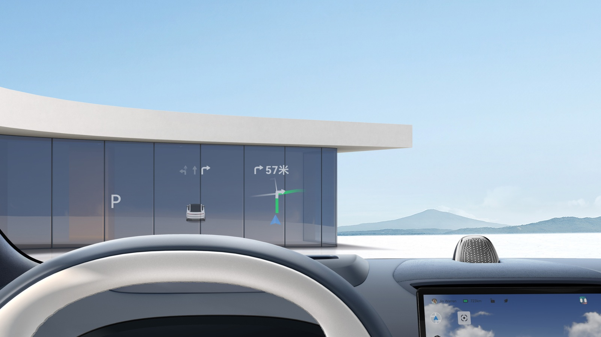
官方图可见左侧车辆／车道、右侧路线与 57 m 提示；没有足够道路背景来验证空间注册。
原始出处 ↗ · 点击图片打开原尺寸
功能、触发与版本说明 8 项
- 模式与设置
- 独立模式菜单及自动切换规则未在产品页公开
- AR 导航：什么时候
- 官方称 AR-HUD；所选图主要展示地图、车速及重建，未据此确认道路贴合精度与 AR 触发条件。
- SR／环境：什么时候
- 图中可见车辆／车道重建；是否随辅助驾驶自动开启、是否可常驻待手册核验。
- 地图：什么时候
- 官方图显示地图／路线；确认图示存在，不认定独立全地图模式。
- TBT：什么时候
- 图中有转向与 57 m 距离。
- 辅助驾驶与告警
- 图示不证明辅助驾驶已激活，也不证明存在独立“SR模式”名称。
- 影像、环境与驻车
- 亮度、雪地、影像及娱乐等设置未在所引产品段取得。
- 版本边界与待核验
- AR-HUD 硬件名、图中看见的功能与具体软件逻辑是三种不同证据。
蔚来 ET7
16.3 英寸产品页＋欧版在线 HUD 说明
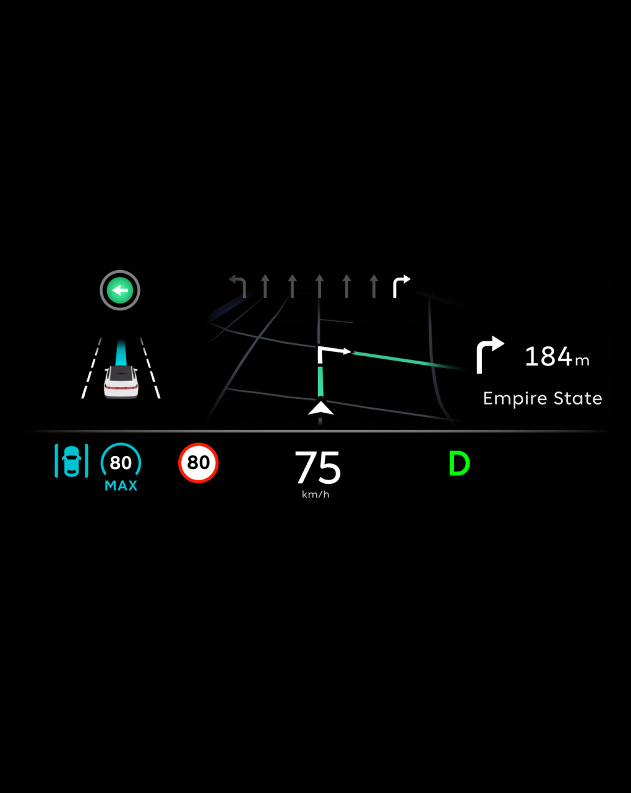
黑底原图中右侧路线、左侧车辆与车道图标，下方为车速、挡位和巡航／限速信息。
原始出处 ↗ · 点击图片打开原尺寸
功能、触发与版本说明 8 项
- 模式与设置
- 可调亮度／高度等；产品页确认路口放大图
- AR 导航：什么时候
- “增强 HUD”并不自动等于道路注册 AR；本次一手资料未确认贴路 AR 导航。
- SR／环境：什么时候
- 产品图可见自车／车道与目标图标；完整 ESD 在手册另章，不能默认整个 ESD 都搬入 HUD。
- 地图：什么时候
- 官方产品说明确认导航与路口放大图；何时从小地图切放大、是否可手动选择，资料未展开。
- TBT：什么时候
- 产品图有下一转向、184 m、道路名与路线图，同屏呈现。
- 辅助驾驶与告警
- 官方 HUD 说明列巡航、交通标志、Autohold 等；具体 NAD 意图类型及触发顺序待版本手册。
- 影像、环境与驻车
- 智能背景亮度控制；不根据产品页“增强”一词推导多焦面。
- 版本边界与待核验
- 产品图目录为 2026-04；欧版在线手册可能覆盖不同软件。未将两者的所有选项组合成统一配置。
深蓝 S07
澳大利亚 2025-11 手册／PDF 134–135
路口引导与车道图形对齐到道路场景，上下分层
原始出处 ↗ · 点击图片打开原尺寸
功能、触发与版本说明 8 项
- 模式与设置
- Standard／Snow 是普通／雪地显示；非 AR／非 AR 切换
- AR 导航：什么时候
- 确认路口引导；导航激活且接近路口时，下方出现可行车道信息。手册未给光毯连续贴路与独立 AR 开关条件。
- SR／环境：什么时候
- 图例明确 Scene reconstruction＝车道线绘制与车辆渲染；该项单独的启停逻辑未说明。
- 地图：什么时候
- 所引 HUD 章未列二维小地图模式。
- TBT：什么时候
- 路口引导信息与可行车道获确认；未在此章命名 TBT 模式。
- 辅助驾驶与告警
- ACC/IACC 已激活且检测到前车／行人时，在其位置显示标记；IACC 长时间未触方向盘出现文字提示；盲区障碍出现提醒。
- 影像、环境与驻车
- 续航开关开启后按设定时长滚动显示。Standard/Snow、亮度和高度可调。
- 版本边界与待核验
- 前车／行人显示有明确 ACC/IACC 条件，不能写成任何驾驶状态都出现。澳洲手册不外推国内。
小米 YU7
2025 天际屏产品图／架构边界样本
全宽风挡黑区中的信息卡片；内容没有覆盖到透明道路区域。
原始出处 ↗ · 点击图片打开原尺寸
功能、触发与版本说明 8 项
- 模式与设置
- 卡片式全景显示；位于风挡下缘黑区
- AR 导航：什么时候
- 所选天际屏本身不是在透明道路视野中注册箭头的 AR-HUD；不纳入道路 AR 已确认样本。
- SR／环境：什么时候
- 可容纳环境类卡片；不能把黑区里的车辆重建叫作贴路 AR。具体常驻规则待手册。
- 地图：什么时候
- 官方图含导航卡片；大地图与其他信息的分工需按天际屏而非传统 HUD 画板研究。
- TBT：什么时候
- 方向与路线可作为信息卡内容；本版不确认其独立模式菜单。
- 辅助驾驶与告警
- 辅助驾驶数据是信息来源之一，信息带显示与驾驶系统是否激活需分别判断。
- 影像、环境与驻车
- 可编辑卡片体现座舱信息带路线；不据此确认独立 AR-HUD 模组。
- 版本边界与待核验
- 这是边界对照样本，国内外计数不代表所有样本拥有同类 HUD。
奔驰 S 级 W223
2020 W223 可选 AR-HUD／2026 改款补充
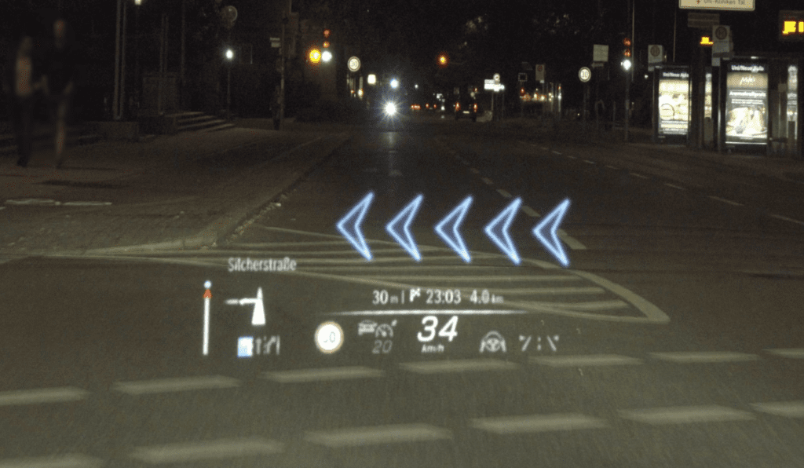
官方图展示道路关联引导与固定状态信息；技术图不是完整实车体验验证。
原始出处 ↗ · 点击图片打开原尺寸
功能、触发与版本说明 8 项
- 模式与设置
- 基本驾驶信息＋道路关联导航／驾驶辅助内容
- AR 导航：什么时候
- 官方确认导航箭头和车道建议可投到前方道路；导航启用、对应导航任务可用时呈现；精确触发距离未公开。
- SR／环境：什么时候
- 2026 MBUX Surround Navigation 的 3D 环境在驾驶员显示屏；官方另述 AR-HUD，不能把两块显示器合并。
- 地图：什么时候
- 未确认 HUD 完整地图模式；详细地图和 Surround Navigation 应按仪表／中控分工阅读。
- TBT：什么时候
- 固定导航提示与 AR 提示可服务不同层级；没有取得与全部外部地图应用兼容的证明。
- 辅助驾驶与告警
- AR 可表达车距与驾驶辅助；不把显示能力等同于 DRIVE PILOT 的可用区域／自动驾驶等级。
- 影像、环境与驻车
- 图像取自 2020 技术发布；2026 改款新增信息另作文字说明，未伪装成新款实拍。
- 版本边界与待核验
- 同属 MBUX 的中控摄像头 AR 导航，与 AR-HUD 是两个显示出口。
奥迪 Q6 e-tron
2024 第二代 AR-HUD／德国技术资料
原图标注道路关联的增强区域
原始出处 ↗ · 点击图片打开原尺寸
功能、触发与版本说明 8 项
- 模式与设置
- 固定状态区＋斜像面道路关联内容
- AR 导航：什么时候
- 确认导航符号与环境关联；厂商描述可产生远至 200 m 的视觉印象，不是每条箭头的固定触发距离。
- SR／环境：什么时候
- 未确认独立 SR 环境模式；辅助提示不等于完整周围车辆重建。
- 地图：什么时候
- 未在所引资料确认 HUD 二维地图模式。
- TBT：什么时候
- 有导航符号；固定 TBT 菜单、路口前触发距离及第三方应用条件待本车手册。
- 辅助驾驶与告警
- 官方明确显示辅助系统和交通标志；不从一张技术图推导所有告警种类。
- 影像、环境与驻车
- 还可显示音乐曲名及 Audi Assistant 头像；因此不能概括为“海外 HUD 只显示车速”。
- 版本边界与待核验
- 官方提及 200 m 是显示感受，不应当作光学多焦面清单或启动阈值。
大众 ID.7 / Tourer
欧洲；2024 Tourer 更新＋2025 官方操作视频
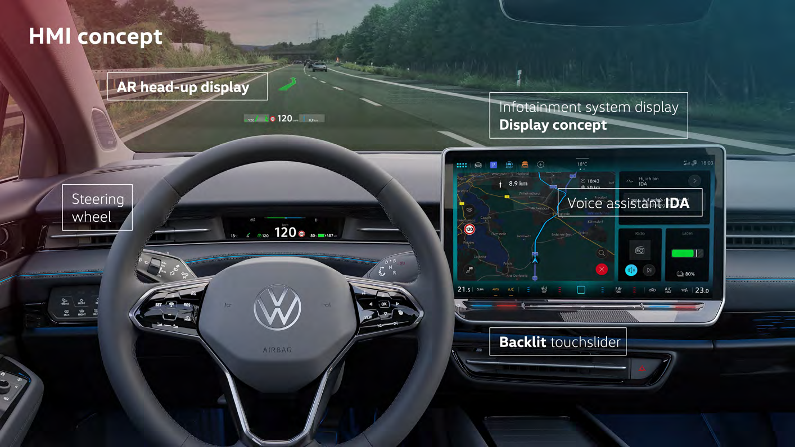
官方发布 PDF 原图；近区固定状态与道路上方引导分开。
原始出处 ↗ · 点击图片打开原尺寸
功能、触发与版本说明 8 项
- 模式与设置
- 近区扩展／精简；可控制 AR 内容
- AR 导航：什么时候
- 确认与道路走向匹配的路线引导；2024 Tourer 更新将 CarPlay／Android Auto 活动导航接入 AR 路线显示。
- SR／环境：什么时候
- ACC 激活显示前车距离、Travel Assist 在车道内显示；未确认独立完整 SR 环境模式。
- 地图：什么时候
- 近区有导航信息；未确认普通二维小地图的全屏模式。
- TBT：什么时候
- 固定近区导航与道路 AR 分层；View 可切近区信息量；不能外推任意手机地图应用均支持。
- 辅助驾驶与告警
- ACC 与 Travel Assist 的显示有明确激活条件，区别于单纯手动导航。
- 影像、环境与驻车
- 方向盘可切换电量、能耗；View 可切近区扩展／精简。
- 版本边界与待核验
- Tourer 的手机接入更新不能无条件套用所有早期 ID.7、ID.4、中国 VIZZION。
宝马 新世代 iX3
2025 发布／新世代；选装 3D HUD
图中贯穿信息带和前方独立 HUD 是两层；不合并成一个超宽 AR 画布。
原始出处 ↗ · 点击图片打开原尺寸
功能、触发与版本说明 8 项
- 模式与设置
- Panoramic Vision 基础信息带＋选装 3D HUD 的导航／辅助
- AR 导航：什么时候
- 官方确认 3D HUD 的导航和驾驶辅助空间深度显示；本版按厂商“3D”命名记录，未据图宣称与全部道路目标精确贴合。
- SR／环境：什么时候
- 确认辅助驾驶图形会进入 3D HUD；未取得独立全场景 SR 模式菜单。
- 地图：什么时候
- 导航与详细路线按 OS X 多显示区分工；不能把 Panoramic Vision 信息带直接当作 3D HUD 小地图模式。
- TBT：什么时候
- 基本导航与 3D 导航分层；第三方手机导航的 3D 效果兼容性未核验。
- 辅助驾驶与告警
- 3D HUD 整合导航和驾驶辅助显示；选装硬件是前提。
- 影像、环境与驻车
- 信息带可以个性化；四个交互单元分工明确。
- 版本边界与待核验
- 旧款 iX3 与新世代配置不同；研究图是 2025 技术概念图，硬件量产证据另见车型发布。
凯迪拉克 VISTIQ
2026 欧版手册；北美 Platinum 实拍

北美道路实拍：固定基础读数与上方远区引导；不能从曝光比较各车真实亮度。
原始出处 ↗ · 点击图片打开原尺寸
功能、触发与版本说明 8 项
- 模式与设置
- Standard／Augmented Reality／Assist 三视图；均保留近层信息
- AR 导航：什么时候
- AR 视图的远层显示道路关联图形：导航有活动路线时显示，碰撞、车道保持和辅助变道按对应条件显示。
- SR／环境：什么时候
- Assist 视图显示激活中的辅助系统状态图形；不据此宣称完整 SR 环境全景。
- 地图：什么时候
- 未确认 HUD 全屏二维地图；不能由车内 Google 地图推导。
- TBT：什么时候
- Standard 远层在车载导航路线激活时显示 TBT；无路线时远层不显示。Assist 视图也可同时显示 TBT。
- 辅助驾驶与告警
- AR 视图可显示配置 Super Cruise 时的按需变道；Assist 视图表达辅助系统状态；关键告警可能在 HUD 关闭时仍显示。
- 影像、环境与驻车
- 近层可显示来电、车速、限速；只有近层可调高度／旋转，远层固定。
- 版本边界与待核验
- 欧洲手册＋北美实拍仅交叉说明架构；不合并为统一配置。手册明确不能把 HUD 图像当作泊车辅助。
现代 IONIQ 5
英国 2022 手册／有 AR-HUD 配置
AR 图例同时包含固定读数和道路关联箭头。与本页 Standard 图并看，观察车辆重建的差别。
原始出处 ↗ · 点击图片打开原尺寸
功能、触发与版本说明 8 项
- 模式与设置
- Augmented reality／Standard／Off；AR 匹配校准
- AR 导航：什么时候
- 确认 AR 模式额外给出 AR 转向、车道安全、前车及起步提示；部分图项依赖 Highway Lane Change Assist 配置。
- SR／环境：什么时候
- Standard 模式图例有 Surrounding vehicle information，是本研究所称 SR 类显示；不是只有 AR 模式才有车道／前车。
- 地图：什么时候
- 所引 HUD 章没有完整小地图模式；不能由车机地图功能外推。
- TBT：什么时候
- 普通 TBT 在 AR 和 Standard 均有；AR 模式还加 AR TBT，二者可以共存。
- 辅助驾驶与告警
- SCC、LFA、HDA 等显示与相应系统状态／配置关联。
- 影像、环境与驻车
- AR Matching Adjustment 只在 AR 模式提供；也可选显示内容。
- 版本边界与待核验
- 这是 2022 手册，不代表 2025 改款仍使用同一 AR 功能。未写“低于某车速自动改 Standard”，因为资料未说明。
起亚 EV6
印度官方英文在线手册／OCV 版面
编号 1 是普通 TBT，11 是 AR TBT；Standard 图例 11 改为周围车辆信息。
原始出处 ↗ · 点击图片打开原尺寸
功能、触发与版本说明 8 项
- 模式与设置
- AR／Standard／Off；AR 校准和内容选择
- AR 导航：什么时候
- AR 模式在普通信息外加入 AR TBT、AR 车道安全、前车标记、前车起步、辅助变道；部分项依赖配置。
- SR／环境：什么时候
- Standard 图例明确有周围车辆信息；AR 模式主要用对象标记和动态引导，不等于完整 SR 模式。
- 地图：什么时候
- 所引 HUD 列表未列完整地图模式。
- TBT：什么时候
- 两种模式都保留普通 TBT；AR 模式还出现 AR TBT。同叫导航不代表同一个位置或表现。
- 辅助驾驶与告警
- SCC 设定车速／车距、LFA、车道安全、盲区、HDA 等按对应功能状态显示。
- 影像、环境与驻车
- AR 为该手册的初始设置；用户可以手动切 Standard，校准和内容可调。
- 版本边界与待核验
- 未标明精确年款，不能套用全部新 EV6。严苛天气可能影响识别；文档没有“雨天自动改 SR”的规则。
起亚 EV9
2026 美国 MV1A 手册／HUD 配置

上部左侧为逐向箭头和距离
原始出处 ↗ · 点击图片打开原尺寸
功能、触发与版本说明 8 项
- 模式与设置
- 内容与辅助信息显示；该章未列 AR／Standard 双模式
- AR 导航：什么时候
- 本版手册未确认道路 AR 导航；不能由 EV6 有 AR-HUD 推导 EV9 也相同。
- SR／环境：什么时候
- 明确列 Surrounding vehicle information，可归 SR 类信息；无独立 SR 模式名称。
- 地图：什么时候
- 未列二维完整地图模式。
- TBT：什么时候
- 确认 TBT（按配置／地区）；道路标志与 TBT 在部分地区提供。
- 辅助驾驶与告警
- SCC 车速／车距、LFA、车道安全、盲区、HDA 和高速自动调速等。
- 影像、环境与驻车
- 围绕行车信息与辅助状态；未确认摄像头视频投到 HUD。
- 版本边界与待核验
- 同品牌不同车型的 HUD 能力不同；EV6 的 AR 图例不可借给 EV9。
丰田 Camry
2024 北美 Quick Reference Guide／HUD 配置
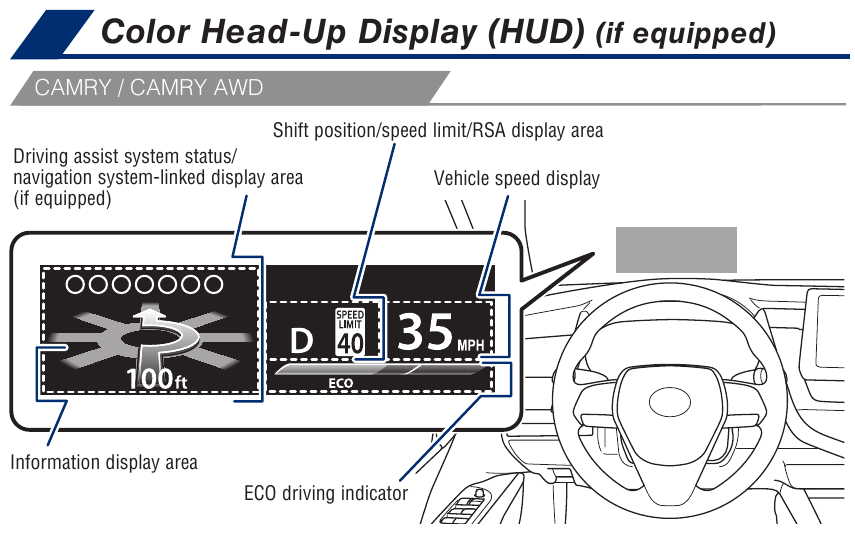
左侧共享导航与辅助驾驶区域
原始出处 ↗ · 点击图片打开原尺寸
功能、触发与版本说明 8 项
- 模式与设置
- HUD 开关及亮度／位置等设置
- AR 导航：什么时候
- 所引手册未列道路 AR 导航。
- SR／环境：什么时候
- 驾驶辅助状态和车道符号不自动等于完整环境重建；本版不计 SR 全景。
- 地图：什么时候
- 本章未列 HUD 小地图模式。
- TBT：什么时候
- 确认 HUD 与导航系统联动（按配置）；这张概览图标出导航联动区，没有展开具体 TBT 图形。
- 辅助驾驶与告警
- 驾驶辅助信息区表达相应系统状态；与基础车速共同构成主要内容。
- 影像、环境与驻车
- 显示信息可按车辆菜单设置；具体多媒体内容依配置。
- 版本边界与待核验
- 北美 2024 是代际锚点，不是对中国新款凯美瑞的完整能力结论。
本田 Accord Hybrid
2026 北美 HUD 配置
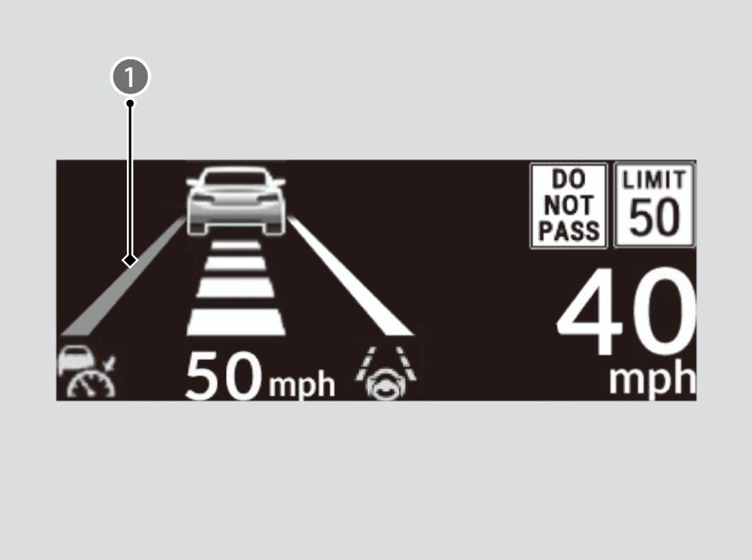
手册列出逐向指引，示图为车道告警态
原始出处 ↗ · 点击图片打开原尺寸
功能、触发与版本说明 8 项
- 模式与设置
- 方向盘选择 HUD 内容；显示项目依版本
- AR 导航：什么时候
- 所引手册未列道路注册 AR 导航。
- SR／环境：什么时候
- Honda Sensing 状态图为辅助显示；未确认完整 SR 世界重建。
- 地图：什么时候
- 未确认 HUD 完整小地图。
- TBT：什么时候
- 确认转向导航提示；导航来源与连接条件须按手册具体项目核对。
- 辅助驾驶与告警
- Honda Sensing 状态按相应系统工作显示，不能当作车辆自动驾驶许可。
- 影像、环境与驻车
- 电源 ON 时显示；可经驾驶员信息界面选择罗盘、TBT 与辅助系统相关信息。
- 版本边界与待核验
- 只描述 2026 北美 HUD 配置；不直接移用到中国雅阁。
马自达 CX-90
2025 美国 Active Driving Display／部分配置
左侧导航 100 ft，中央车道／前车和巡航，右侧车速；上部和两侧预留告警区。
原始出处 ↗ · 点击图片打开原尺寸
功能、触发与版本说明 8 项
- 模式与设置
- 独立导航／辅助／警告区域；可调显示信息
- AR 导航：什么时候
- 该手册未列道路注册 AR 导航。
- SR／环境：什么时候
- i-ACTIVSENSE 区可见车道和前车图形；归局部重建式辅助显示，不宣称完整 SR。
- 地图：什么时候
- 未列 HUD 小地图模式。
- TBT：什么时候
- 导航区显示转向及距离；图中为 100 ft 指令。
- 辅助驾驶与告警
- FCTA 横向穿行警报、BSM 盲区、警告引导和 i-ACTIVSENSE 分区显示。
- 影像、环境与驻车
- 可记忆显示位置、亮度及显示信息；显示设置通过 Mazda Connect。
- 版本边界与待核验
- 固定车道透视图并不构成贴路 AR；内容依配置。
沃尔沃 XC90
美国当前产品页／2025 手册辅助核对
功能、触发与版本说明 8 项
- 模式与设置
- HUD 基本驾驶信息；Calm／Navi 是仪表模式
- AR 导航：什么时候
- 所引官方资料未确认道路注册 AR 导航。
- SR／环境：什么时候
- 未取得 HUD 完整环境重建模式的证据。
- 地图：什么时候
- 详细地图的 Navi 视图在 12.3 英寸仪表；不能错误记为 HUD 地图模式。
- TBT：什么时候
- HUD 确认导航指令、车速和限速；不用完整地图也能提供下一动作。
- 辅助驾驶与告警
- 警告等可由 HUD 呈现，逐项辅助驾驶图形仍需对应手册。
- 影像、环境与驻车
- 亮度、位置可调；官方将仪表与 HUD 的信息分工分别介绍。
- 版本边界与待核验
- 原图下载受限，保留官方原图入口，不用其他车型照片替代。
比亚迪 海豹 SEAL
欧版左舵／2024-10 手册；非中国新款
功能、触发与版本说明 8 项
- 模式与设置
- Classic／Snow；可选安全驾驶辅助信息
- AR 导航：什么时候
- 手册 HUD 章未确认贴路 AR 导航。
- SR／环境：什么时候
- 车道偏离和 BSD 是状态／预警信息；没有取得完整 SR 重建证据。
- 地图：什么时候
- 该版 HUD 章未列小地图显示模式。
- TBT：什么时候
- 所引欧版 HUD 章列举项未明确导航形式，本版保留未核实；不等于其他市场或 OTA 均无导航。
- 辅助驾驶与告警
- 明确显示车速、限速、ACC、车道偏离和 BSD；安全辅助信息可选，默认开启。
- 影像、环境与驻车
- Classic 默认，Snow 按环境选；亮度、高度、旋转可调并记忆上次状态。
- 版本边界与待核验
- 采用官方手册设置页，不把座舱可旋转中控图当成 HUD 内容证明。
比亚迪 宋 L DM-i
2026 中国用户手册／HUD 按配置
功能、触发与版本说明 8 项
- 模式与设置
- HUD 开关；位置、亮度、旋转及模式设置按手册
- AR 导航：什么时候
- 所引章节未确认贴路 AR 导航。
- SR／环境：什么时候
- 未确认完整 SR 模式；车道偏离／盲区提示不等于全景环境重建。
- 地图：什么时候
- 确认 HUD 可显示导航，但该章未证明完整小地图模式。
- TBT：什么时候
- 确认导航信息进入 HUD；具体 TBT 图形及地图源支持需对应界面补图。
- 辅助驾驶与告警
- 手册列车速、导航、限速、ACC、车道偏离和盲区监测等。
- 影像、环境与驻车
- 中控设置→声音显示开启／关闭 HUD；出厂开启，重新启动车辆记忆上次状态。
- 版本边界与待核验
- 国内大众价位的普通 HUD 样本；不因支持导航就归 AR-HUD。
没有匹配项。可清空关键词或重置筛选。
各家与国内外：差在哪里
以下是基于所选车型的一手证据作出的分析；不把样本差异升级成国别总排名。
硬件大、模式多，并不是体验结论
当前证据主要是手册、官方技术图和少量媒体实拍；没有统一驾驶位置、相机曝光、道路环境和软件版本的横向实测。
分析：本研究比较能力与逻辑，不给真实亮度、眩晕、AR 注册误差或安全收益排总榜。
真正的体验差距，还要怎样验证
| 比较维度 | 核心问题 | 需要的证据 | 当前可以得出的结论 |
|---|---|---|---|
| 空间注册 | 箭头／目标是否随实际道路、坡道、头部移动稳定落在正确位置？ | 同一路口与不同坐姿的连续视频、对齐误差和延迟实测。 | 现有静态图不能给中国／海外的数值排名。 |
| 理解辅助驾驶 | 能否分清可用、激活、待执行、执行、接管，以及系统准备变道的方向？ | 同一套人工驾驶→ACC→领航→接管→退出任务记录。 | 理想自动加入环境、深蓝目标触发、大众系统分工已有文档依据。 |
| 导航链路 | 同一导航源能否输出 TBT、地图与道路 AR？何时路口放大？ | 车机内置与 CarPlay／Android Auto 分开，逐应用／地区核验。 | 问界限制与大众 Tourer 更新构成直接差异；不能推广为整个国内外生态。 |
| 模式覆盖 | 简洁模式是否仍保留告警？SR 是否常驻？倒车时哪些内容退出？ | 逐状态录屏＋开关表，包含导航与辅助同时激活。 | 理想车速模式被辅助驾驶补充、问界极简禁影像，说明模式优先级存在品牌差异。 |
| 可读性与遮挡 | 白天是否可读，夜间是否过亮；视频与重建是否占用目标视野？ | 同硬件测量和用户任务；偏光镜、眼盒边缘、雨夜分别记录。 | 本页不按照片颜色、尺寸或亮度外观判胜负。 |
| 版本与交付 | 某功能是发布演示、可选硬件、当前 OTA、还是后续规划？ | VIN 对应配置、车机版本、发行记录、当地手册。 | 小鹏发布演示、SU7 OTA 线索、IONIQ 5 旧版手册均单列边界。 |
文献、图像与版本索引
每车事实依据对应下列条目；原图出处、年代及 SHA-256 另见 JSON。媒体图仅用于观察画面；SU7 的 OTA 二手报道作为线索单列，没有纳入已确认的新功能。
M9问界 M9 2026 款增程版使用说明书 ↗
官方手册 · 中国；260930 目录版；使用既有原始 PDF 归档核验
定位：PDF／标页 28–30；AR 车道指引、显示模式、影像、小地图、意图文字
证据状态：已核验正文 · 查阅 2026-11-23M8问界 M8 增程版使用说明书 ↗
官方手册 · 中国；260930 目录版；使用既有原始 PDF 归档核验
定位：PDF／标页 28–31；尤其第 30 页 AR 车道指引、第 31 页 P 挡观影限制
证据状态：已核验正文 · 查阅 2026-11-23LI理想 i8 抬头显示装置界面总览 ↗
官方手册 · i8 2026 Max；20260805185610 在线手册
定位：界面模式、地图显示模式、路口放大图、路口红绿灯、数字后视镜影像
证据状态：已核验正文 · 查阅 2026-11-23G7小鹏与华为联合发布追光全景 AR-HUD ↗
官方发布演示 · 2025-06-05；发布场景不等于每个软件版本均已交付
定位：三大创新场景；导航／辅助驾驶／安全
证据状态：已核验正文 · 查阅 2026-11-23C11全新 C11 AR-HUD 联合技术发布 ↗
供应商联合发布 · 2025-11-25；2026 款全新 C11
定位：多模式精准交互；车速／AR／地图模式；盲区与倒车影像
证据状态：已核验正文 · 查阅 2026-11-23C11-FC11-I全新 C11 转载 HUD 场景画面 ↗
媒体转载画面，仅作图像证据 · 2026-06-01 文章；原始拍摄者及软件版本未标明，不能称为本项目独立实测
定位：地图与道路提示画面；仅作图片观察，不采纳其技术排名
证据状态：已核验正文 · 查阅 2026-11-23WEYWEY-CL60乐道 L60 用户手册 ↗
官方手册 · 中国；2025-10-28 文件
定位：PDF 第 100–101 页／标页 99–100：抬头显示、环境感知常驻显示、雪地模式
证据状态：已核验正文 · 查阅 2026-11-23NIOET7 Enhanced Head-Up Display System ↗
官方手册 · 欧版英文在线手册；正文通过网页检索核验，直接下载受限
定位：Driving and Parking → Feature Settings → Enhanced Head-Up Display；ESD 单列章节
证据状态：已核验正文 · 查阅 2026-11-23NIO-PET7 产品页：16.3 英寸增强 HUD ↗
官方产品页 · 2026-11-23 检索；图片资产目录 2026-04-13
定位：Digital cockpit → Enhanced 16.3-Inch Head-Up Display；导航及路口放大图
证据状态：已核验正文 · 查阅 2026-11-23ZEEKR极氪 007 全球产品页 ↗
官方产品图 · 全球展示页，首发代外观／座舱；不代表全部地区软件
定位：Intelligent Cockpit → 35.5-inch AR-HUD；配图的导航及车道车辆
证据状态：已核验正文 · 查阅 2026-11-23SU7-P小米汽车配置表 ↗
官方配置页 · 动态页面，2026-11-23 检索；年款须逐车确认
定位：HUD 与 SR 路面感知系统分别列项；不能由整车配置推出 HUD 内功能
证据状态：已核验正文 · 查阅 2026-11-23SU7-ISU7-LEADSU7 HUD OTA 更新线索 ↗
媒体线索，未纳入确认矩阵 · 报道的卡片、HAD 轨迹与影像需官方 OTA 日志或对应实车版本复核
定位：2026-03-24 报道；仅作为继续寻找官方版本说明的线索
证据状态：二手线索，未升级为技术事实 · 查阅 2026-11-23YU7S07DEEPAL S07 Owner’s Manual ↗
官方手册 · 澳大利亚；文件 211125；不外推中国版本
定位：PDF 134–135／标页 122–123：11 项图例、行车信息及 Standard/Snow
证据状态：已核验正文 · 查阅 2026-11-23MBS-Class W223 Digital My MBUX ↗
官方技术发布 · 2020 代际发布；配可选 AR-HUD
定位：AR-HUD 的导航、车距和驾驶辅助投影
证据状态：已核验正文 · 查阅 2026-11-23MB-262026 S-Class 技术发布：Surround Navigation 与 AR-HUD ↗
官方技术发布 · 改款发布；与 2020 配图分开记录
定位：Navigate with confidence：3D 周围环境在 driver’s display；AR 引导在 HUD
证据状态：已核验正文 · 查阅 2026-11-23AUDIAudi Q6 e-tron 新显示与操作概念 ↗
官方技术说明 · 2024-06-28；德国规格
定位：第二代 AR-HUD、斜像面、导航／辅助／音乐／语音头像
证据状态：已核验正文 · 查阅 2026-11-23AUDI-IVWID.7 Tourer 座舱与 AR-HUD 更新 ↗
官方技术发布 · 2024-02-19 欧洲 ID.7 Tourer 首发，不外推全部 ID.7 软件
定位：Enhanced augmented reality head-up display；手机导航接入 AR 路线
证据状态：已核验正文 · 查阅 2026-11-23VW-VID.7 / ID.7 Tourer 官方操作视频 ↗
官方操作视频 · Volkswagen Österreich；2025-10-17
定位：官方说明：ACC 车距、Travel Assist 车道、View 切换近区
证据状态：已核验正文 · 查阅 2026-11-23BMWBMW iX3：Panoramic iDrive 与 3D HUD ↗
官方车型发布 · 2025-09 发布；新世代 iX3，非旧款 G08
定位：数字座舱／选装 3D Head-Up Display 的导航与自动驾驶图形
证据状态：已核验正文 · 查阅 2026-11-23BMW-IBMW Panoramic iDrive 四个交互单元 ↗
官方技术图 · 2025-01-07 技术发布图，不作在售配置证明
定位：Panoramic Vision 与选装 3D HUD 分开
证据状态：已核验正文 · 查阅 2026-11-23GMCadillac VISTIQ Owner Manual 2026 ↗
官方手册 · 欧洲英文，2025-06-26 文件；实拍来自北美，具体设置以本市场为准
定位：PDF 115–117：近／远层；Standard、Augmented Reality、Assist 三视图
证据状态：已核验正文 · 查阅 2026-11-23GM-IVISTIQ 北美媒体试驾 HUD 画面 ↗
媒体实拍，仅作图像证据 · 2026 Platinum；2025-10-12
定位：AR HUD 实拍，原文转弯场景
证据状态：已核验正文 · 查阅 2026-11-23HYIONIQ 5 2022 Convenience Features ↗
官方手册 · 英国 2022 手册；不外推 2025 改款及所有市场
定位：PDF 58–60／标页 5-58–5-60：AR/Standard、编号图例、校准
证据状态：已核验正文 · 查阅 2026-11-23EV6EV6 Head-up display information ↗
官方手册 · 印度官方英文在线手册；代际版面 OCV，未标精确年款
定位：AR 图例 1–15、Standard 图例 1–11
证据状态：已核验正文 · 查阅 2026-11-23EV6-SEV6 Head-up display settings ↗
官方手册 · 同上
定位：Display mode → Augmented reality / Standard；AR calibration
证据状态：已核验正文 · 查阅 2026-11-23EV6-LEV9EV9 Head Up Display Information ↗
官方手册 · 美国 MV1A／2026 在线手册
定位：图例 1–11；TBT、SCC、LFA、HDA、周围车辆
证据状态：已核验正文 · 查阅 2026-11-23TOYOTACamry 2024 Quick Reference Guide ↗
官方手册 · 北美 2024 HUD 配置；既有 PDF 归档
定位：PDF 19／标页 17：HUD 信息与设置
证据状态：已核验正文 · 查阅 2026-11-23HONDAAccord Hybrid 2026 Head-Up Display ↗
官方手册 · 北美 2026 HUD 配置；既有 HTML 归档
定位：About the Head-Up Display：ACC／LKAS／Traffic Jam Assist、罗盘／TBT、LDW／BRAKE／交通标志
证据状态：已核验正文 · 查阅 2026-11-23MAZDACX-90 Active Driving Display ↗
官方手册 · 美国 2025／Some Models
定位：6 个显示区域：FCTA、警告、BSM、i-ACTIVSENSE、车速、导航
证据状态：已核验正文 · 查阅 2026-11-23VOLVOXC90 Displays and connectivity ↗
官方产品页 · 当前美国页面，2026-11-23 检索；图片下载 403
定位：仪表 Calm/Navi 视图；HUD 的车速、限速、导航
证据状态：已核验正文 · 查阅 2026-11-23VOLVO-MXC90 2025 User Manual ↗
官方手册 · 2025 24w17；网页检索可读，本地下载 403
定位：4.3.1–4.3.2 HUD 及显示设置
证据状态：检索正文已核验；未取得本地 PDF · 查阅 2026-11-23WEY-I蓝山智驾版媒体静态体验图 ↗
媒体实拍，仅作图像证据 · 2024-04 发布前演示；不证明 2025 歌词功能
定位：HUD 特写，文章明确为静态演示状态
证据状态：已核验正文 · 查阅 2026-11-23SEALBYD SEAL 欧版左舵用户手册 ↗
官方手册 · 2024-10-25 手册；2025-02 官网页径；仅此欧版
定位：标页 133：HUD、Classic／Snow、可选辅助信息
证据状态：已核验正文 · 查阅 2026-11-23SONGL2026 款宋 L DM-i 用户手册 ↗
官方手册 · 中国 2026 款；HUD 随配置
定位：4-5 驾驶辅助功能／标页 281–282：HUD 导航及显示设置
证据状态：已核验正文 · 查阅 2026-11-23TI-FOVTI HUD Eyebox and Field of View ↗
官方光学技术示意 · Texas Instruments，2016 修订；只解释几何术语，不代表当前车型参数
定位：DLPA073A，第 6 页 Figure 5；原 PDF 局部渲染，保留全部原标签
证据状态：已核验原始 PDF 及图 5 · 查阅 2026-11-23MINI-IMINI Countryman SE All4 试驾：可收起的 HUD ↗
媒体实车动图静帧，仅作架构观察 · 2025 Countryman SE All4；2025-03-23 试驾文章；补充参考车型，不计入 26 车矩阵
定位：Retracting head-up display；John Velasco 实车动图第 21 帧
证据状态：已核验原动图和静帧；未改变画面内容 · 查阅 2026-11-23WEY-U蓝山车主驻车体验：SR-HUD 设置与影院画面 ↗
车主实拍，仅作画面证据 · 2024-11-26 发帖，2025-02-18 最后编辑；车辆软件和配置未独立核验
定位：文中 SR-HUD 设置实拍、车库内观影实拍
证据状态：已核验原始图片；不采用帖子内容推导功能阈值 · 查阅 2026-11-23当前缺口与下一轮补证
优先补充全新 C11 三模式的同车实拍、乐道 L60 常驻环境界面、SU7 官方 OTA 版本说明、BYD 宋 L／SEAL 的 HUD 内容图和 XC90 可归档原图。小鹏发布功能需逐一关联量产手册或实车软件；极氪 007 的自动切换和地图源条件待官方手册。
尚未完成统一实车测试：AR 注册精度／延迟、雨夜可读性、眼盒边缘裁切、导航源兼容、告警叠加与退出恢复。原图及摘录仅用于研究说明，版权归原出版方；本项目不授予商业素材再使用许可。